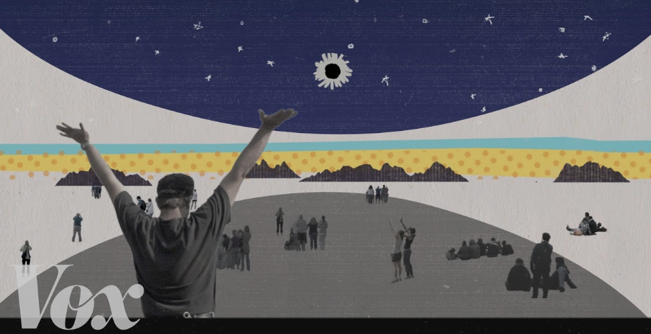

Moon Gazing

Sometimes when I'm driving, I love glancing at the full moon when it's yellow and really big. This might be a supermoon? I'm not sure. It has a yellowish hue and it's very pretty. It's interesting how much more magnified the moon can look.
Have you Ever Seen a Solar eclipse?
A few years ago in the United States there was Solar Eclipse and I'm 90 percent sure that it reached full totality but I can't remember. It was a big deal to be able to catch sight of it and I watched it with my friends. You're supposed to be very cautious when viewing a Solar Eclipse and view them with the right glasses to protect your eyes. I did wear glasses but after looking at the eclipse I was concerned for the rest of the day that something was wrong with my vision.
When I look at the sky I think I see small moving orbs. That may or may not be normal but it's okay. It stressed me out for sometime after that day but nowadays I don't think about it much.
My Favorite Solar Eclipse Video
Tales From the Shadow of The Moon